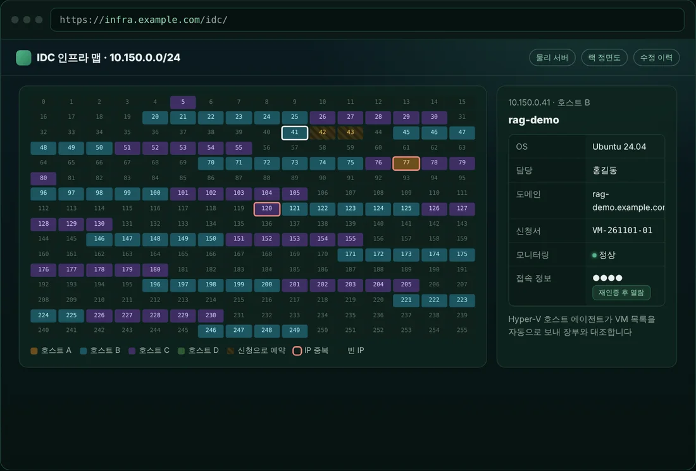

인프라 / 보안 엔지니어 · 경력 5년 11개월
공사 현장에서 서버실까지 직접 확인하고, 침해 흔적 하나도 끝까지 추적하는 엔지니어입니다.
성장하는 조직에서 보안 체계를 함께 만들고 싶어 지원했습니다.
왼쪽부터 순서대로 보시면 됩니다. 각 단계를 누르면 짧은 설명이 열립니다.
공고의 주요 업무를 선택하면 수행 경력이 나타나고, 각 경력을 누르면 해당 프로젝트가 열립니다.
나라스페이스의 인재상마다 실제로 겪은 사례를 하나씩 연결했습니다.
문제를 어떻게 분석하고 해결했는지, 주도한 프로젝트를 중심으로 정리했습니다.
약 20년간 인프라 전담 인력 없이 운영되던 환경에서, 엑셀·메신저·구두로 흩어져 처리 이력이 남지 않던 IT 요청을 하나의 포털로 모았습니다. 필요한 기능부터 먼저 열어 운영하고 있습니다.

예시 데이터로 재현한 화면인프라 포털, EML 메일 뷰어 등 업무에 필요한 도구를 AI 바이브 코딩으로 직접 기획·구현해 배포했습니다.
현장에서 익힌 네트워크를 이론으로 정리하기 위해 취득했습니다 (2024.12).
회로도를 읽고 측정값을 따라 고장 원인을 좁혀 갑니다. 장애를 추적하는 방식과 같습니다.